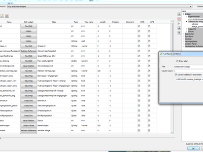
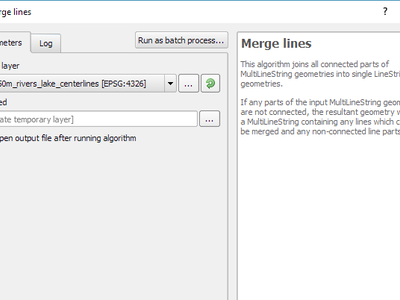

QGIS 2.18の変更履歴¶

これは2.xシリーズの最後のリリースです。現在のロングタームリリース（LTR）はバージョン2.14.xのままです。このリリースでは、以前のリリースよりも漸進的な改良が施されています。活動の大部分は、現在、2017年の第1四半期末に予定されている次世代リリースであるQGIS 3.0の開発に焦点を当てています。
感謝
We would like to thank the developers, documenters, testers and all the many folks out there who volunteer their time and effort (or fund people to do so). From the QGIS community we hope you enjoy this release! If you wish to donate time, money or otherwise get involved in making QGIS more awesome, please wander along to qgis.org and lend a hand!
QGIS is supported by donors and sponsors. A current list of donors who have made financial contributions large and small to the project can be seen on our donors list. If you would like to become and official project sponsor, please visit our sponsorship page for details. Sponsoring QGIS helps us to fund our six monthly developer meetings, maintain project infrastructure and fund bug fixing efforts. A complete list of current sponsors is provided below - our very great thank you to all of our sponsors!
QGISはフリーソフトウェアであり、使用するために何かを支払う義務はありません。実際、財務的または社会的地位にかかわらず、遠くから広く人々にそれを使用するよう奨励したいと考えています。すべての人類にとってより良い社会をもたらします。
QGISバージョン2.18.0のスポンサー¶
私たちは毎年、私たちがやっていることを評価して、プロジェクトに取り込まれる持続的な開発努力を促進しようとしてくれる様々な組織からの支援を受けています。これらのスポンサーを感謝とともに以下に記します。
  QGIS Usergroup Switzerland, Switzerland
QGIS Usergroup Switzerland, Switzerland |
  State of Vorarlberg 、オーストリア State of Vorarlberg 、オーストリア |
 Office of Public Works, Ireland 、アイルランド Office of Public Works, Ireland 、アイルランド |
 GAIA mbh 、ドイツ GAIA mbh 、ドイツ |
 Sourcepole AG 、スイス Sourcepole AG 、スイス |
| ドイツQGIS ユーザーグループ 、ドイツ |
|
|
|
|
|
|
|
|
|
|
|
|
|
|
|
|
|
SOLTIG (Soluciones en Tecnologías de Información Geográfica) |
|
|
|
|
|
|
|
|
|
|
|
|


一般¶
機能：識別結果の中の自動リンク¶
属性値内の http または mailto のリンクは、結果の確認パネル内のクリック可能なリンクに自動的に変換されるようになりました。

この機能は Sandro Mani（Sourcepole） によって開発されました
機能：マウスホイールをカラーダイアログのスライダーに重ねる¶
QGIS 2.18では、カラーピッカーダイアログ内のいずれかのスライダ上でマウスホイールをスクロールして、値を少しずつ増やすことができます。これは、色のコンポーネントを微調整するための便利なショートカットです。

この機能は、 Nyall Dawson（North Road） によって資金提供されました
この機能は、 Nyall Dawson（North Road） によって開発されました。
機能：カスタムカラースキームをカラーボタンドロップダウンメニューに追加する¶
QGIS 2.18では、ユーザーが作成したカラースキームをカラーボタンのドロップダウンメニューに表示するかどうかをユーザーが設定できるようになりました。この設定は、リストタブのカラーピッカーダイアログで制御します。新しいカラースキームを追加して、スキームメニューから新しい 「show in buttons」オプションを選択してください。一般的なパレットのセットを持っていて、カラーメニューから即座に使用できるようにするには便利なショートカットです。

この機能は、 North Road によって資金提供されました
この機能は、 Nyall Dawson（North Road） によって開発されました。
シンボロジー¶
機能：レイヤースタイルのパネルにカラーピッカーが埋め込まれました¶
QGIS 2.18では、レイヤースタイルパネル内のカラーボタンをクリックすると、別のダイアログとしてではなく、スタイルパネル自体でカラーピッカーダイアログが開きます。これにより、色をインタラクティブに変更して結果を即座にプレビューできます。

この機能は、 North Road によって資金提供されました
この機能は、 Nyall Dawson（North Road） によって開発されました。
ラベリング¶
機能：ラベル付けの代替リストサポート¶
ラベルテキストに適用するテキスト置換のリストを指定する機能を追加します。例：通りの種類を省略します。
ユーザーは代替品のリストをエクスポートおよびインポートして、再利用および共有を容易にすることができます。

この機能は、 North Road によって資金提供されました
この機能は、 Nyall Dawson（North Road） によって開発されました。
機能：改良されたラインラベル配置アルゴリズム¶
ラインレイヤーのパラレルラベリングモードは大幅に改善されました。新しいアルゴリズムにより、地物ジオメトリのジグザグ部分にラベルを配置することはありません。

この機能は、Andreas Neumannによって資金提供されました
この機能は、 Nyall Dawson（North Road） によって開発されました。
機能：周囲に沿って曲線ラベルを使用してポリゴンにラベルを付ける¶
これにより、ポリゴンの外周に曲線ラベルを使用してラベルを付ける新しいモードが追加されます。

この機能は、 North Road によって資金提供されました
この機能は、 Nyall Dawson（North Road） によって開発されました。
レンダリング¶
機能：ラスタータイルのプレビュー（WMTSおよびXYZレイヤー）¶
QGISの以前のバージョンでは、結果の地図を表示するために、レイヤーのすべてのタイルのダウンロードが完了するまで待つ必要がありました。これは今修正され、地図のキャンバスにタイルがダウンロードされるとすぐに表示され、何かが表示されるまでの時間を大幅に短縮することでユーザーエクスペリエンスが向上します。さらに、より低い解像度またはより高い解像度からの以前にダウンロードされたタイルは、正しい解像度を有するタイルがまだダウンロードされていない領域のプレビュー機能に使用されてもよい。

この機能は、 土地情報ニュージーランド によって資金提供されました
この機能は、 Martin Dobias（Lutra Consulting） によって開発されました。
機能：ラスター（WMS、WMTS、WCS、XYZレイヤー）のキャンセル可能なレンダリング¶
この機能強化により、リモートサーバーからのラスターレイヤーを操作する際のユーザーエクスペリエンスが向上します。以前は、ユーザーインターフェースがその間に凍っていたので、地図を再びズームまたはパンできるように、ダウンロードが完全に完了するまで待つ必要がありました。これは、ラスターレイヤーのレンダリングがいつでもキャンセルできるという事実によって修正されています。
この機能は、 土地情報ニュージーランド によって資金提供されました
この機能は、 Martin Dobias（Lutra Consulting） によって開発されました。
データ管理¶
機能：選択した機能のみをコピーするフラグを追加する¶
オフライン編集プラグインは、QGISに同梱されているデフォルトのプラグインで、リモートデータセット（データベースなど）をオフライン化してフィールドで編集し、オフィスに戻ったときに再同期化することができます。これにより、オフライン編集の可能性が拡張され、大きなレイヤーのサブセットでしか動作しません。

この機能は、DB Fahrwegdienste GmbHによって資金提供されました。
この機能は Matthias Kuhn（OPENGIS.ch） によって開発されました
フォームとウィジェット¶
機能：個々の編集ウィジェットのラベルを制御できるようにする¶
フォーム内の個々の編集ウィジェットのラベルを制御できるようにする。ドラッグアンドドロップデザイナーでは、項目をダブルクリックすると、各項目ごとにラベルを個別に表示するかどうかを制御できます。
さらに、リンク/リンク解除ボタンが関係参照ウィジェットに表示されているかどうかを設定することができます。これは、親がなくても子が存在しない1：n関係を隠すのに便利です。

この機能は、 Kanton Zug、GIS-Fachstelle によって資金提供されました
この機能は Matthias Kuhn（OPENGIS.ch） によって開発されました
機能：タブとグループボックスの条件付き可視性¶
これにより、タブとグループボックスをドラッグアンドドロップデザイナーフォームで条件付きで表示または非表示にするための新しい設定オプションが追加されました。
設定は、フィールドコンフィグレーションインターフェイスのデザイナツリーでダブルクリックして行います。
可視性を制御する式を入力できます。この式は、フォームの変更時に毎回値が再評価され、それに応じて表示/非表示のタブまたはグループボックスが再評価されます。

この機能は Matthias Kuhn（OPENGIS.ch） によって開発されました
機能：クライアント側のデフォルトのフィールド値¶
このフィールドのデフォルト値を評価するために使用されるベクターレイヤーフィールドに式を設定できるようにします。デフォルト値式は、デジタル化されたジオメトリなど、呼び出し時に存在する地物のプロパティを利用できます。式変数はデフォルト値式でも使用できるため、ユーザー名、現在の日時、プロジェクトのパスなどを簡単に挿入できます。

この機能は、DB Fahrwegdienste GmbHによって資金提供されました。
この機能は、 Nyall Dawson（North Road） によって開発されました。
地図コンポーザ¶
機能：真北矢印¶
QGIS 2.18では、コンポーザの北矢印を真北に向けるサポートが追加されました。以前はすべての矢印がグリッド北に整列されていましたが、これは極地または非北上の投影（南アフリカの一部の投影システムなど）には適していません。今度は、矢印を北または真北に向けるように選択できます。オプションのオフセット角度もあり、グリッドのコンバージェンスを指定して矢印を磁北に向けることができます。

この機能は ノルウェー極地研究所のQuantarcticaプロジェクト によって資金提供されました
この機能は、 Nyall Dawson（North Road） によって開発されました。
プロセッシング¶
機能：表面上のポイントアルゴリズム¶
この新しいアルゴリズムは重心アルゴリズムに似ていますが、重心が対応する地物の外にある場合、 『Point on surface』 アルゴリズムは、対応するポリゴン地物の内部にあるポイントを作成することが保証されています（または、ラインレイヤの対応するライン地物にタッチする ）。

この機能は、 North Road によって資金提供されました
この機能は、 Nyall Dawson（North Road） によって開発されました。
機能：処理ディゾルブアルゴリズムは複数のフィールドを受け入れます¶
ディゾルブアルゴリズムでは、複数のフィールド値に基づいてディゾルブできるようになりました。以前のQGISのバージョンでは、ディゾルブは地物を単一のフィールド値でグループ化することしかできませんでした。

この機能は、 North Road によって資金提供されました
この機能は、 Nyall Dawson（North Road） によって開発されました。
機能：最適化処理クリップアルゴリズム¶
処理クリップアルゴリズムは、一般的な使用シナリオに対して最適化されており、結果としてクリッピング操作のスピードアップが大幅に向上しました。例えば：
2つのポリゴンに対して100万行の道路レイヤをクリッピングする
** 2つのポリゴンに対して500万ポイントのアドレスレイヤをクリッピングする**

この機能は、 North Road によって資金提供されました
この機能は、 Nyall Dawson（North Road） によって開発されました。
機能：バウンディングボックスアルゴリズム¶
この新しいアルゴリズムは、入力レイヤーの各地物のバウンディングボックス（エンベロープ）を計算します。

この機能は、 North Road によって資金提供されました
この機能は、 Nyall Dawson（North Road） によって開発されました。
機能：連結線アルゴリズムをマージする¶
このアルゴリズムは、MultiLineStringジオメトリのすべての接続部分を単一のLineStringジオメトリに結合します。入力されたMultiLineStringジオメトリのいずれかの部分が接続されていない場合、合成ジオメトリは、マージ可能な線や接続されていない線部分を含むMultiLineStringになります。

この機能は、 North Road によって資金提供されました
この機能は、 Nyall Dawson（North Road） によって開発されました。
機能：幾何境界アルゴリズム¶
この新しいアルゴリズムは、入力ジオメトリ（すなわちジオメトリのトポロジカル境界）のコンビナトリアル境界のクロージャを返します。たとえば、ポリゴンジオメトリにはポリゴンの各リングの線ストリングで構成される境界があり、線のジオメトリには線の開始点と終了点からなる境界があります。このアルゴリズムはポリゴンまたはラインレイヤーにのみ有効です。

この機能は、 North Road によって資金提供されました
この機能は、 Nyall Dawson（North Road） によって開発されました。
データプロバイダ¶
機能：XYZタイルレイヤーのネイティブサポート¶
XYZ形式のラスタータイルがWMSデータプロバイダ内でネイティブにサポートされ、QuickMapServicesやOpenLayersなどのサードパーティのプラグインを使用しなくても、他のソースからのベースマップを表示できます。
XYZレイヤーへの接続を追加するには、ブラウザドックウィジェットを開き、「タイルサーバー（XYZ）」という項目を探して右クリックして、「新規接続」アクションのポップアップメニューを表示します。 {x} 、 {y} 、 {z} が現在の地図ビューに従って実際のタイル番号に置き換えられるURLを求められます。たとえば、OpenStreetMapベースマップを追加するには、次のURLを使用します： http://c.tile.openstreetmap.org/{z}/{x}/{y}.png
データプロバイダは、Bingが使用する「クワッドキー」へのXYZタイル番号のエンコードもサポートしています。URLに {x} 、 {y} や {z} の代わりに {q} を使うだけです。

この機能は Lutra Consulting によって資金提供されました
この機能は、 Martin Dobias（Lutra Consulting） によって開発されました。
QGISサーバー¶
機能：サーバ内の地物情報ジオメトリをセグメント化する可能性¶
曲線（CircularArc、CompoundCurve、CurvePolygon）を含むジオメトリでは必要ですが、Webクライアント（QGIS Webクライアントなど）ではこれらのジオメトリタイプの表示を処理できません。
この機能は、[プロジェクトプロパティ]ダイアログの[OWSサーバー]タブで有効にすることができます。

この機能は、Andreas Neumannによって資金提供されました
この機能は Marco Hugentobler（Sourcepole） によって開発されました。
プラグイン¶
機能：DBマネージャー：SQLレイヤーを更新する機能を追加する¶
この機能を使用すると、SQLリクエストに基づいている場合、レイヤー・データソースを更新できます。
この機能は Ifremer によって資金提供されました
この機能は 3Liz によって開発されました
プログラマビリティ¶
機能：GEOS線形参照関数をQgsGeometryに公開する¶
新しい関数 QgsGeometry::lineLocatePoint() が追加され、線ストリングに沿った線ストリング上の最も近い位置から所定の点までの距離を取得します。
この機能は、 North Road によって資金提供されました
この機能は、 Nyall Dawson（North Road） によって開発されました。
機能：2.18の新しいPyQGISクラス¶
新しいコアクラス¶
- QgsAnnotation - an interface for annotation items which are drawn over a map
- QgsFeedback - a base class for feedback objects to be used for cancellation of something running in a worker thread
- QgsOptionalExpression - an expression with an additional enabled flag
新しいGUIクラス、再利用可能なウィジェット¶
- QgsExpressionLineEdit - includes a line edit for entering expressions together with a button to open the expression creation dialog. This widget is designed for use in contexts where no layer fields are available for use in an expression and space is constrained.
- QgsTabWidget - similar to QTabWidget but with additional methods to temporarily hide/show tabs
機能：新しい式の関数¶
QGIS 2.18には、角度/距離補間の関数を含むいくつかの新しい式関数が追加されています。
line_merge：MultiLineStringジオメトリを接続されたLineStringsにマージします。boundary：ジオメトリのトポロジカルな境界を返します。つまり、ポリゴンの場合、これはポリゴンのリングを表すMultiLineStringですangle_at_vertex：指定された頂点インデックスのジオメトリに対する平均（二等分線）の角度を返しますdistance_to_vertex：指定された頂点インデックスまでのジオメトリに沿った距離を返しますline_interpolate_angle：ジオメトリに沿って指定された距離でジオメトリに平行な角度を計算しますline_interpolate_point：距離のあるライン上のポイントを返します。line_locate_point：指定された点に最も近い最も近い行位置へのラインに沿った距離を返します
この機能は、Andreas Neumannによって資金提供されました
この機能は、 Nyall Dawson（North Road） によって開発されました。